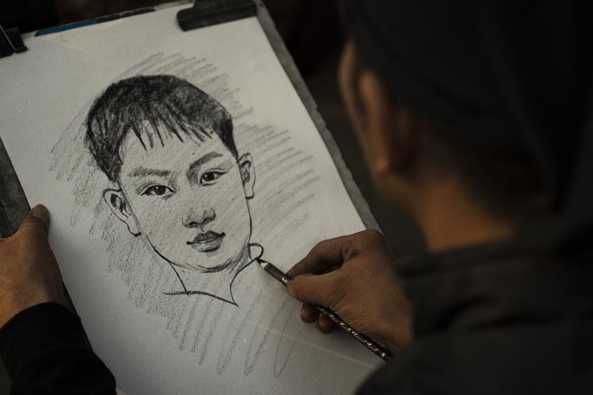

Início
Esboços
LineArt
Pintura
Quer começar a desenhar e não sabe como?
Venha que aqui, você aprenderá o básico que se precisa!
Para que o desenho é util? Por que eu vou querer ter um conhecimento como esse?
A pratica do desenho, além de melhorar nossa percepção visual, também estimula a criatividade, concentração e facilita no aprendizado e sistematização de ideias (que mais tarde podem vir a auxiliar na escrita de artigos e em apresentação).
Lista de coisas importantes para se ter e mente na hora de desenhar:
- Desenho não é talento, você é capaz;
- Não é necessário materias caros, a arte se varia e dá para desenhar com praticamente qualquer coisa basta saber inovar.
- O local para desenhar também pode ser bem amblo, qualquer um serve.
- Você não vai começar incrivelmente bom, deve-se ter em mente que são processos e cada pessoa leva um tempo diferente para se aperfeiçoar.
